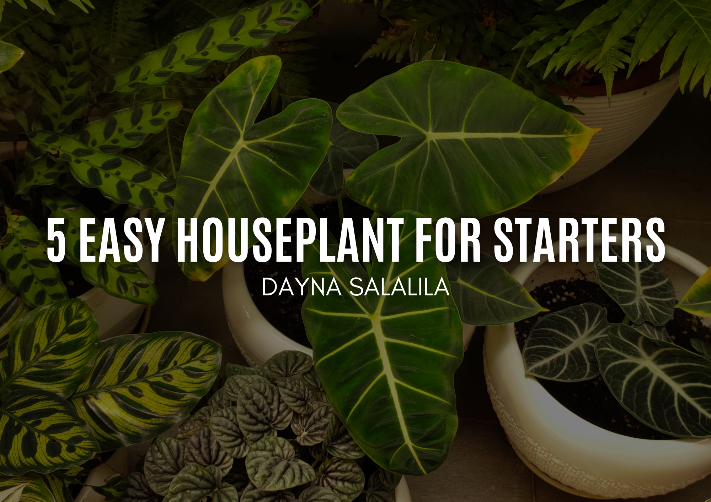

Recent Posts
BLOGS

November 2022 / Dayna Salalila
5 Easy Houseplants for Starters
Spider Plant - Produce a rosette of long, thin, arched green or white-variegated foliage. These easy-to-grow houseplants, which were popular in Victorian-era households, look especially nice in a hanging basket.
Read More
November 2022 / Dayna Salalila
Rare Indoor Plants You Can Add To Your Collection
Monstera - A massive floor plant with one of design's most recognizable leaves. The nickname "Swiss cheese" refers to the iconic splits and holes in its leaves, while "breadfruit" refers to its corn-shaped fruit.
Read More
November 2022 / Dayna Salalila
5 Herbs You Can Grow At Home
Green chives have a flavor that is somewhat similar to onion. They belong to the Allium genus, which also contains leeks, garlic, and onions. Allium vegetables have been grown for centuries because of their distinctively strong aromatic flavors in food and their therapeutic benefits.
Read More